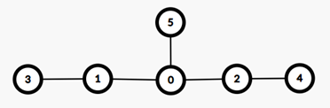

Hệ thống đô thị của thành phố XYZ có thể được mô phỏng dưới dạng cây gồm $$$N$$$ đỉnh và $$$N-1$$$ cạnh. Mỗi đỉnh trên cây tương ứng với một khu dân cư, được đánh số từ $$$0$$$ đến $$$N-1$$$. Mỗi cạnh trên cây tương ứng với một con đường, được đánh số từ $$$0$$$ đến $$$N-2$$$. Trong đó, con đường thứ $$$i$$$ ($$$0\le i\le N-2$$$) nối trực tiếp hai khu dân cư $$$A_i$$$ và $$$B_i$$$.
Ban quy hoạch đô thị đã chọn ra $$$K$$$ tuyến đường để làm các tuyến đường trọng điểm. Các tuyến đường này được đánh số từ $$$0$$$ đến $$$K-1$$$. Trong đó, tuyến đường trọng điểm thứ $$$i$$$ ($$$0\le i\le K-1$$$) tương ứng với đường đi ngắn nhất xuất phát từ khu dân cư $$$U_i$$$ và kết thúc tại khu dân cư $$$V_i$$$.
Trong $$$Q$$$ ngày tiếp theo, mỗi ngày ban quy hoạch đô thị sẽ chọn ra một tuyến đường tiềm năng. Trong ngày thứ $$$i$$$ ($$$0\le i\le Q-1$$$), tuyến đường tiềm năng mà ban quy hoạch chọn sẽ là đường đi ngắn nhất xuất phát từ khu dân cư $$$X_i$$$ và kết thúc tại khu dân cư $$$Y_i$$$. Tuyến đường này trong ngày thứ $$$i$$$ sẽ được coi là tuyến đường trọng điểm thứ $$$K$$$. Khi kết thúc ngày, tuyến đường tiềm năng trong ngày đó sẽ không được coi là tuyến đường trọng điểm nữa.
Với mỗi ngày, ban quy hoạch muốn chọn ra một số khu dân cư và đặt trạm tại các khu dân cư đó sao cho:
Lưu ý: Ban quy hoạch chỉ muốn mô phỏng phương án đặt trạm. Trên thực tế, ban quy hoạch sẽ không xây dựng bất kỳ trạm nào trong suốt thời gian xét các tuyến đường tiềm năng.
Yêu cầu: Giả sử bạn là một thành viên của ban quy hoạch đô thị, hãy viết một chương trình để giải quyết vấn đề trên.
Chi tiết cài đặt
Thí sinh cần cài đặt hàm sau:
vector<int> solve(int N, int K, int Q, const vector<int>& A, const vector<int>& B,
const vector<int>& U, const vector<int>& V,
const vector<int>& X, const vector<int>& Y);
Lưu ý:
Ràng buộc
| Subtask | Điểm | Giới hạn |
| 1 | $$$5$$$ | $$$1\le N,K,Q\le 14; T\le 50$$$ |
| 2 | $$$10$$$ | $$$\sum_N,\sum_K,\sum_Q\le 500$$$ |
| 3 | $$$10$$$ | $$$\sum_N,\sum_K,\sum_Q\le 3000$$$ |
| 4 | $$$20$$$ | $$$A_i=i,B_i=i+1$$$ với mọi $$$i$$$ từ $$$0$$$ đến $$$N-2$$$ |
| 5 | $$$55$$$ | Không có ràng buộc gì thêm |
Example
Xét lần gọi hàm sau:
solve(6, 2, 2, {0, 0, 0, 1, 2}, {1, 2, 5, 3, 4}, {3, 4}, {1, 2}, {5, 5}, {0, 1})
Hệ thống đô thị của thành phố XYZ bao gồm $$$N=6$$$ khu dân cư và có thể được mô phỏng theo hình như sau:

Có $$$K=2$$$ tuyến đường được ban quy hoạch đô thị chọn làm tuyến đường trọng điểm. Các tuyến đường đó bao gồm:
Ban quy hoạch đô thị sẽ xét tuyến đường tiềm năng trong $$$Q=2$$$ ngày tiếp theo:
Như vậy, hàm trên cần trả về kết quả là $$$\{3,2\}$$$.